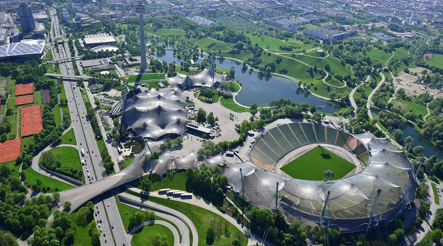

L'Olympiapark di Monaco di Baviera è uno dei parchi più iconici della città, simbolo delle Olimpiadi estive del 1972. Questo enorme spazio verde non solo offre una vasta area per attività ricreative e sportive, ma è anche sede di eventi culturali e concerti. Il parco è un vero e proprio polmone verde della città, che attrae sia i residenti che i turisti con la sua bellezza e le numerose opportunità di svago.
L'Olympiapark fu costruito in occasione delle Olimpiadi estive del 1972, quando Monaco fu scelta per ospitare il prestigioso evento sportivo. Il progetto architettonico fu realizzato dallo studio di architettura Behnisch & Partner, e il parco stesso fu concepito come uno spazio multifunzionale, che unisse sport, cultura e natura. La struttura unica delle tende in plastica del tetto dello stadio olimpico divenne immediatamente un simbolo riconoscibile in tutto il mondo.
Oggi l'Olympiapark è una delle principali destinazioni turistiche di Monaco, con numerose attrazioni che ne fanno una meta ideale per famiglie, sportivi e amanti della natura. Le principali attrazioni includono:
Oltre alle sue attrazioni iconiche, l'Olympiapark offre una vasta gamma di attività all'aperto. Gli amanti dello sport possono praticare jogging, ciclismo, o fare arrampicata sulle strutture apposite. Il parco è anche un luogo ideale per il picnic, e i visitatori possono passeggiare tra i numerosi sentieri immersi nel verde. Durante tutto l'anno, l'Olympiapark ospita anche eventi e festival, tra cui il celebre Oktoberfest, che attira migliaia di persone.
Una visita all'Olympiapark è un'esperienza indimenticabile. Non solo offre una bellissima cornice naturale, ma è anche il luogo perfetto per imparare di più sulla storia delle Olimpiadi del 1972 e sulle architetture innovative del parco. Oltre ai tour guidati, il parco offre anche diverse aree tematiche dove i visitatori possono scoprire il patrimonio storico e culturale di Monaco.